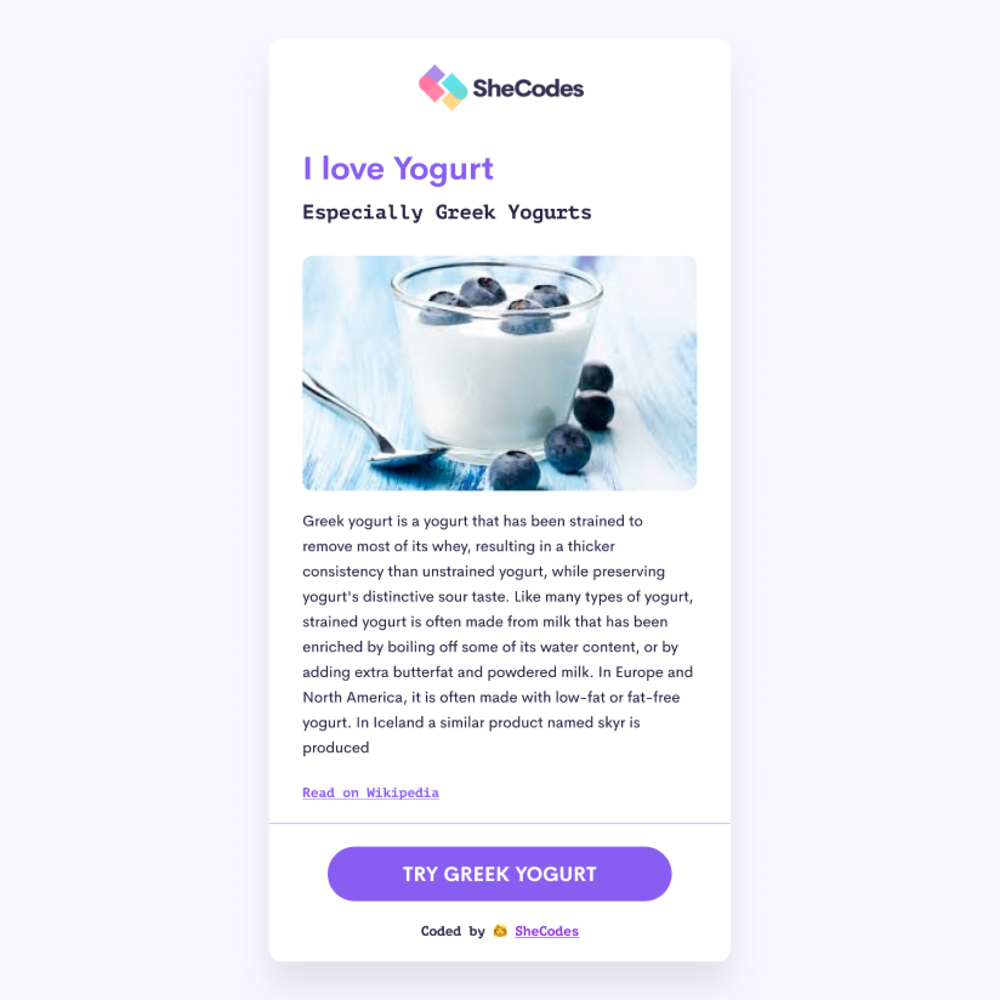
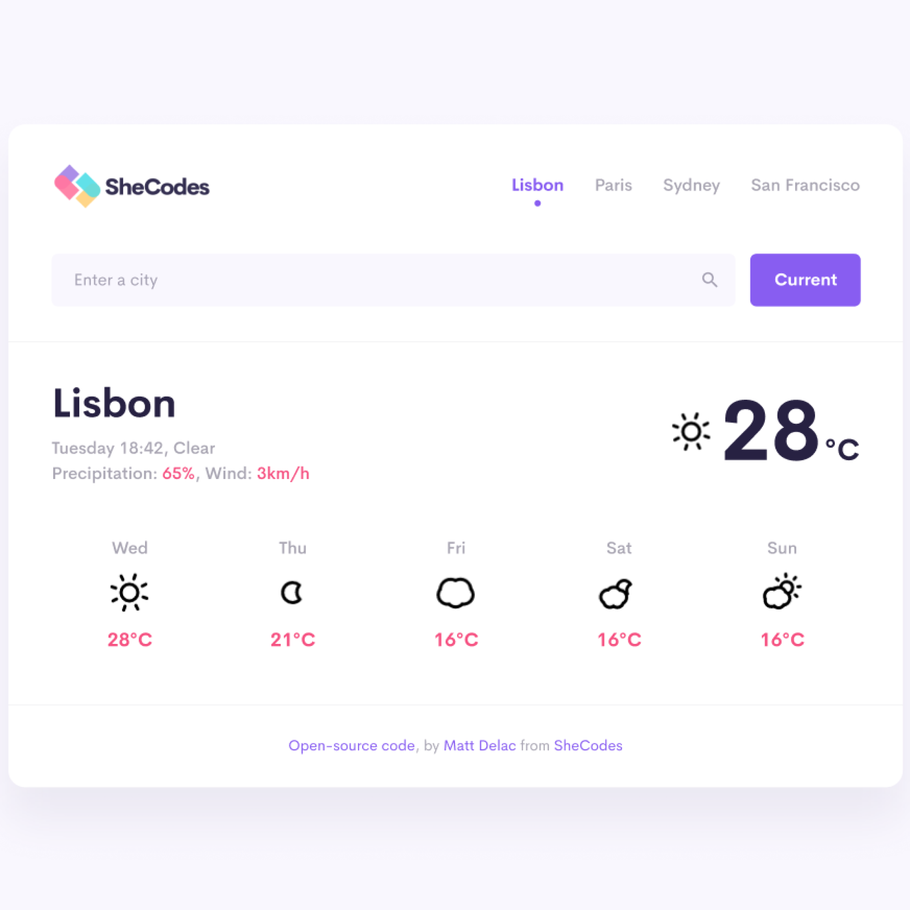
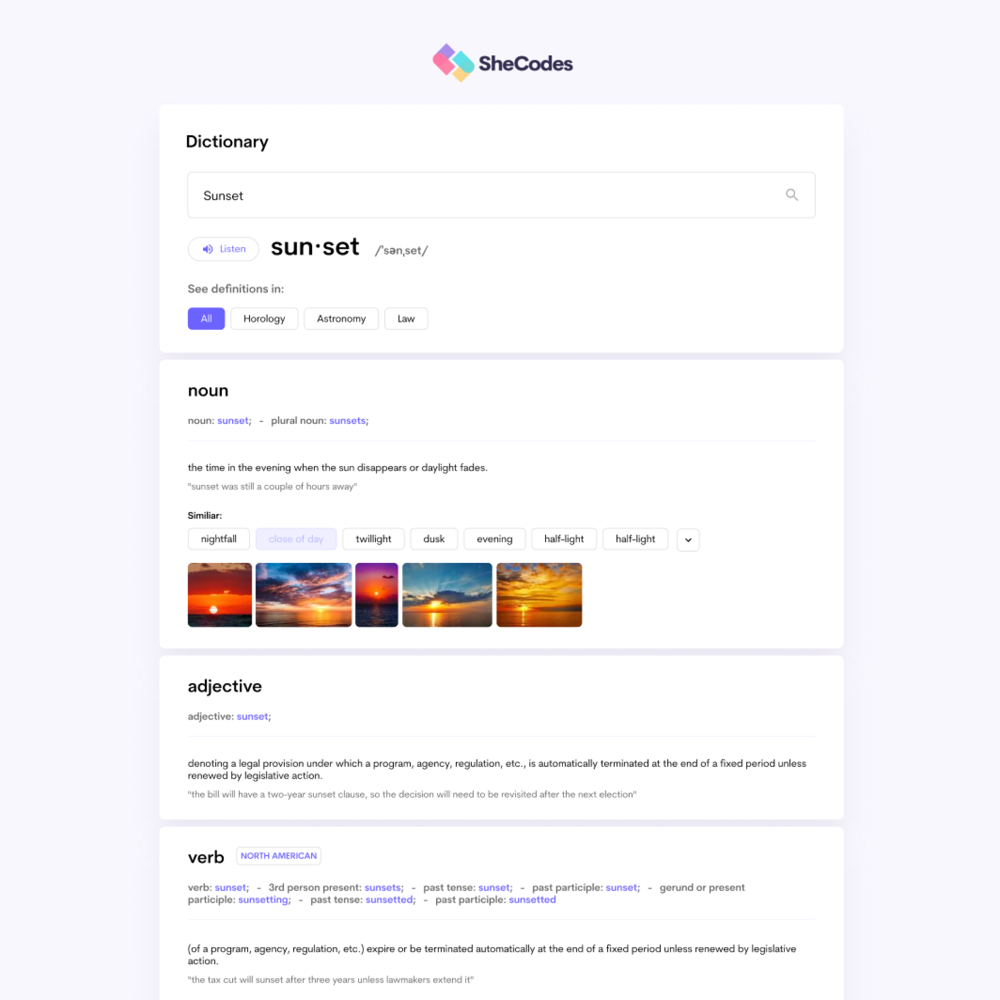

I build clean, responsive, user‑friendly interfaces with modern web technologies. Passionate about design systems, accessibility, and creating delightful digital experiences.
Contact Me
Greek yogurt is a yogurt that has been strained to remove most of its whey, resulting in a thicker consistency while preserving its distinctive sour taste.
Read on Wikipedia
This weather application allows users to search for real‑time weather conditions in any city. It displays temperature, humidity, wind speed, and a dynamic weather icon based on live API data.
Launch Weather App
This dictionary app provides fast and accurate definitions using a powerful API. Users can search any word and instantly receive meanings, phonetics, examples, and pronunciation audio.
Launch Dictionary App